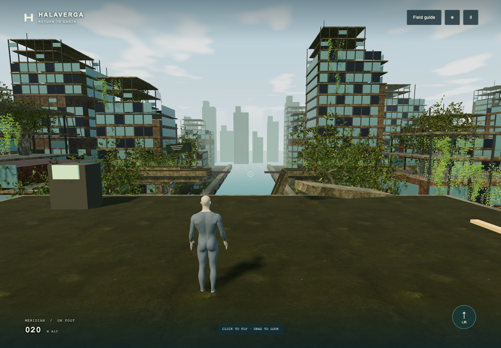
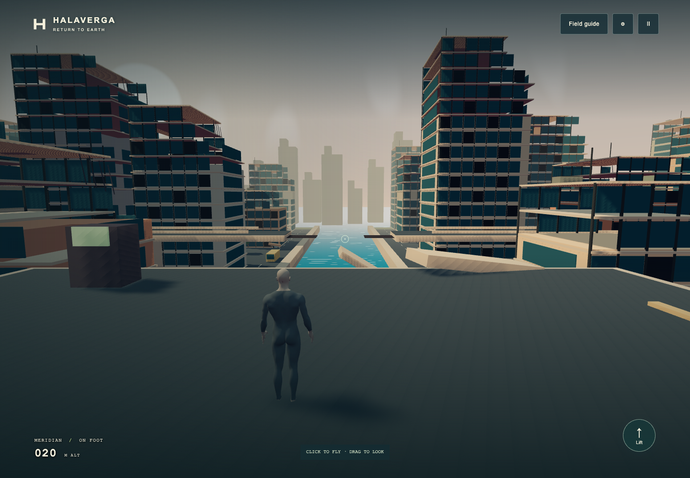

Reclaimed boulevard.
A broken highway, a flooded city, and eighty years of growth. This first playable corridor establishes the light, materials, and vegetation for the environment.


Reveal afterReveal before
Recognizable ruins.
Broken floor plates, exposed supports and a collapsed roadway keep the setting grounded in a damaged modern city.
Growth with a place.
Tree canopies occupy the street and exposed office floors. Hanging plants follow ledges while open water preserves the flight route.
Light and depth.
Warm sunlight, blue-green water and weathered concrete replace flat surfaces and the heavy shading over the play view.